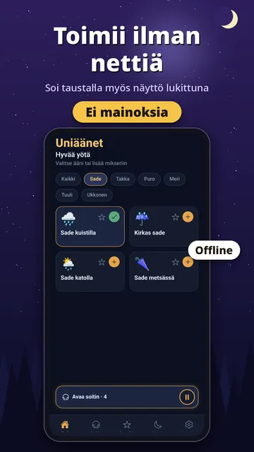

Sade katolla – äänet nukkumiseen
”Sade katolla” on tietynlainen sade: pisarat osuvat kovaan pintaan aivan yläpuolellasi, ja äänessä on enemmän naputusta ja vähemmän avoimen ilman pehmeää sihinää. Moni etsii juuri sitä, kun haluaa nukahtaa sateeseen, joka tuntuu sisäiseltä ja suojaisalta, ei myrskyltä pellolla.
Uniäänet – Levollinen yö sisältää sateen katolla neljän sadenauhoitteen joukossa, yhdessä kuistisateen ja metsäsateen kanssa. Voit kuunnella kattosadetta yksin tai sekoittaa sen muihin sovelluksen luonnon ääniin.


Sadeäänen valinta ja sekoittaminen
Sade katolla on yleensä tasaisempi ja ”sisäisempi” kuin sade metsässä. Jos haluat hieman säätä ympärille, voit lisätä etäistä ukkosta tai tuulta – enintään viisi ääntä kerrallaan – ja säätää kutakin, kunnes katto jää etualalle. Jos ukkonen tuntuu tapahtumalta eikä taustalta, jätä se pois; moni, joka etsii sadetta katolla, etsii myös versiota ilman ukkosta.
Sovelluksessa on kaikkiaan 23 luonnon ääntä kuudessa ryhmässä: sade, takkatuli, puro, meri, tuuli ja ukkonen. Suosikit tallentavat äänet ja voimakkuudet, joten sama kattosade on valmiina seuraavana yönä.
Suunniteltu soimaan yön yli, myös ilman nettiä
Nauhoitteet ovat valmiina sovelluksessa, joten sade katolla toimii ilman wifiä ja ilman kymmentuntista videota. Toisto jatkuu näytön lukittuessa, ja toistoa ja taukoa voi käyttää lukitusnäytöltä. Enintään 12 tunnin uniajastin päättyy hillittyyn himmennykseen, jonka keston valitset itse. Sovelluksessa ei ole mainoksia, mikä merkitsee, jos sinut on joskus herättänyt mainos kesken videon.
Laajemmin sateesta, joka toimii junassa, lentokoneessa tai missä yhteys katkeaa, kertoo opas sadeäänet nukkumiseen ilman nettiä. Jos haluat toisenlaisen yöäänen, siitä on myös sivu takkatulen äänestä nukkumiseen.
Rauhallinen tausta, ei hoito
Uniäänet ei ole lääkinnällinen sovellus eikä se hoida unihäiriöitä. Sade katolla on vain tuttu, tasainen tausta. Osa käyttää sitä myös arjen äänten peittämiseen; lisää on oppaissa naapurin melusta yöllä ja kuorsaavasta puolisosta sekä laajemmassa oppaassa näin nukut meluisassa kerrostalossa. Pidä voimakkuus mukavana.
Kokeile sovellusta
Uniäänet tehtiin alun perin omaan käyttöön, koska tekijä on herkkä äänille yöllä. 7 päivän kokeilu alkaa ensimmäisestä käynnistyksestä. Kaikki ominaisuudet ovat käytössä ilman maksutietoja, eikä kokeilu muutu itsestään maksulliseksi tilaukseksi. Sen jälkeen voit jatkaa kuukausitilauksella Google Playssa, hintaan joka näkyy ennen tilaamista. Ei seurantaa eikä tiliä. Tehty Suomessa.
7 päivää ilmaiseksi, sen jälkeen kuukausitilaus. Uniäänet – Levollinen yö, Androidille.